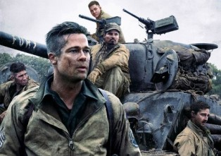
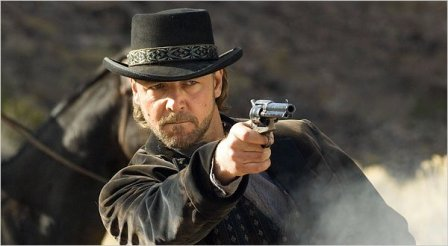

Musical/dance films are cinematic forms that emphasize full-scale scores or song and dance routines in a significant way (usually with a musical or dance performance integrated as part of the film narrative), or they are films that are centered on combinations of music, dance, song or choreography. Major subgenres include the musical comedy or the concert film.
With the coming of talking motion pictures, the musical film genre emerged from its roots: stage musicals and operettas, revues, cabaret, musical comedy, music halls and vaudeville. They were the last of the major film genres, because they were dependent on sound captured on film. (How could a movie be "all-singing, all-dancing" without sound?) Musicals are often described as Broadway on film, although many other forms of musicals have been made (e.g., rock 'n' roll movies and disco/dance films). Recently, animated films (with musical soundtracks, such as Beauty and the Beast (1991), Aladdin (1992), The Lion King (1994), and Tarzan (1999)) have emerged as one of the major musical forms, and many of them have won Best Original Song Oscars.
War and Anti-War Films often acknowledge the horror and heartbreak of war, letting the actual combat fighting or conflict (against nations or humankind) provide the primary plot or background for the action of the film. Typical elements in the action-oriented war plots include POW camp experiences and escapes, submarine warfare, espionage, personal heroism, "war is hell" brutalities, air dogfights, tough trench/infantry experiences, or male-bonding buddy adventures during wartime. Themes explored in war films include combat, survivor and escape stories, tales of gallant sacrifice and struggle, studies of the futility and inhumanity of battle, the effects of war on society, and intelligent and profound explorations of the moral and human issues.
Some war films do balance the soul-searching, tragic consequences and inner turmoil of combatants or characters with action-packed, dramatic spectacles, enthusiastically illustrating the excitement and turmoil of warfare. And some 'war' films concentrate on the homefront rather than on the conflict at the military war-front. But many of them provide decisive criticism of senseless warfare.
War films have often been used as 'flag-waving' propaganda to inspire national pride and morale, and to display the nobility of one's own forces while harshly displaying and criticizing the villainy of the enemy, especially during war or in post-war periods. Jingoistic-type war films usually do not represent war realistically in their support of nationalistic interests, while avoiding the reality of the horrors of war. The good guys are portrayed as clashing against the bad guys (often with stereotyped labels such as 'krauts,' 'commies,' 'Huns,' or 'nips'). These revisionistic, politically-correct and historically inaccurate films, in such diverse examples as Sands of Iwo Jima (1949) and The Alamo (1960), would often redefine the facts.
Westerns are the major defining genre of the American film industry, a nostalgic eulogy to the early days of the expansive, untamed American frontier (the borderline between civilization and the wilderness). They are one of the oldest, most enduring and flexible genres and one of the most characteristically American genres in their mythic origins.
[The popularity of westerns has waxed and waned over the years. Their most prolific era was in the 1930s to the 1960s, and most recently in the 90s, there was a resurgence of the genre. They appear to be making an invigorating comeback (both on the TV screen and in theatres). Modern movie remakes, such as 3:10 To Yuma (2007) and the Coen Brothers' True Grit (2010) have also paid homage to their mid-20th century predecessors.]
This indigenous American art form focuses on the frontier West that existed in North America. Westerns are often set on the American frontier during the last part of the 19th century (1865-1900) following the Civil War, in a geographically western (trans-Mississippi) setting with romantic, sweeping frontier landscapes or rugged rural terrain. However, Westerns may extend back to the time of America's colonial period or forward to the mid-20th century, or as far geographically as Mexico. A number of westerns use the Civil War, the Battle of the Alamo (1836) or the Mexican Revolution (1910) as a backdrop.